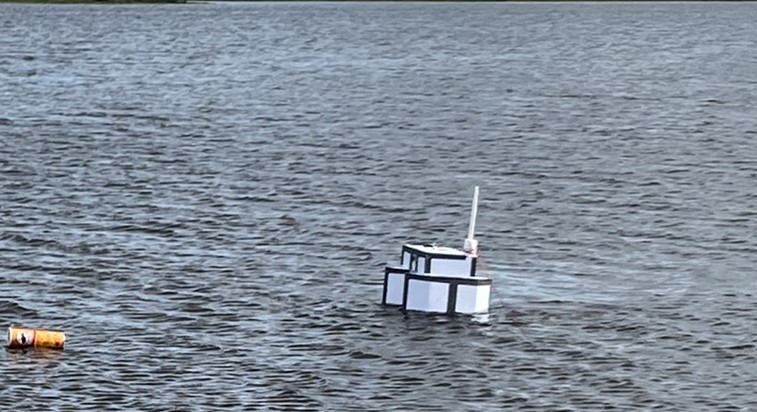
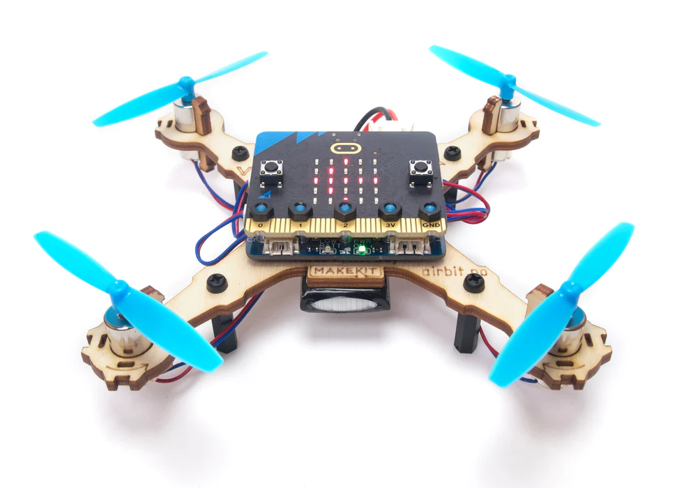
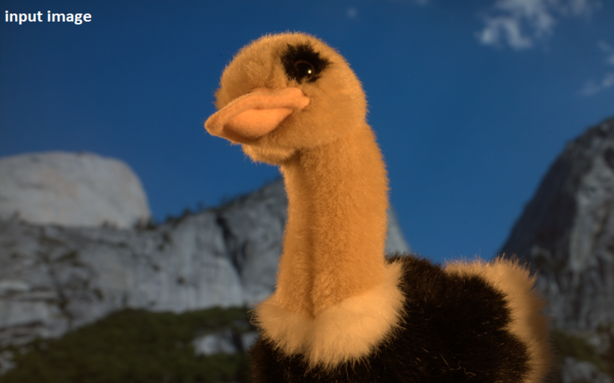
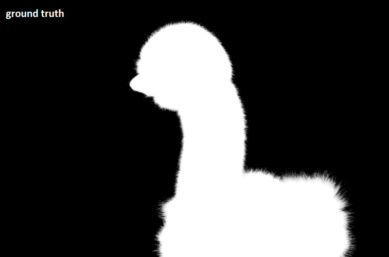
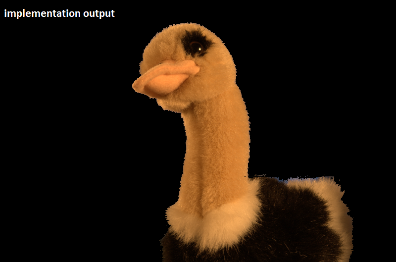

YOLOv5 Based Unmanned Surface Vessel V1.0
Project has been designed to detect trashes on water surface. The USV uses YOLOv5 deep learning model to detect objects in real-time. To watch the field test video click read more.


MicroBit Mini Drone PID Controller
Project has been done for cyber-physical systems module. Mini drone is controller by MicroBit development board. PID controller has been implemented to control drone's altitude and balance on air. To watch video click read more.
Bayesian Matting Implemetation
Project has been done for computational method module by Team 3D. Python implementation is done by Ali Camdal.

Bayesian Matting Implemetation
Bayesian matting proposes a solution for matting problems such as extracting background and foreground. This implementation has been done based on Chuang et al's paper. Moreover, multiprocessing features have been used in solving process. It accelerates process significantly. Also, GUI makes easier using implementation. Codes can be found here.


